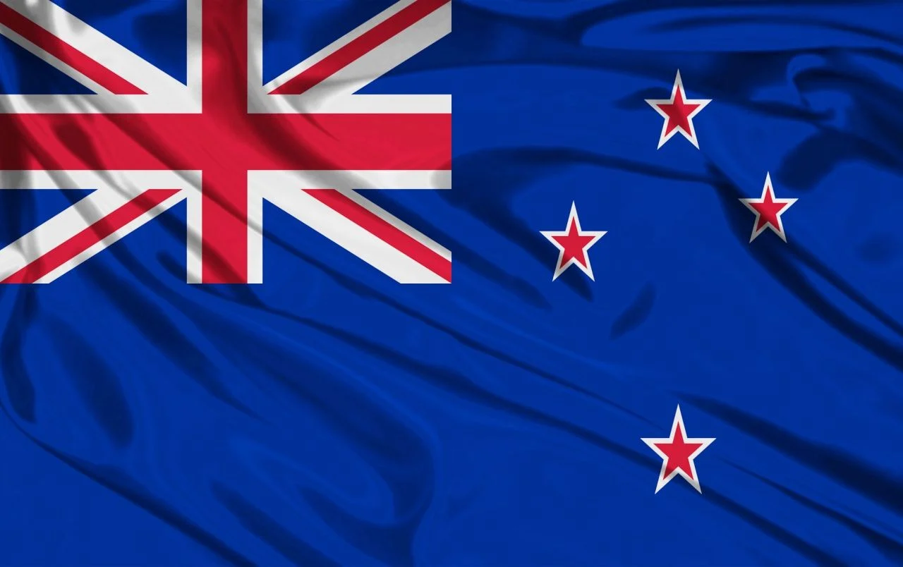
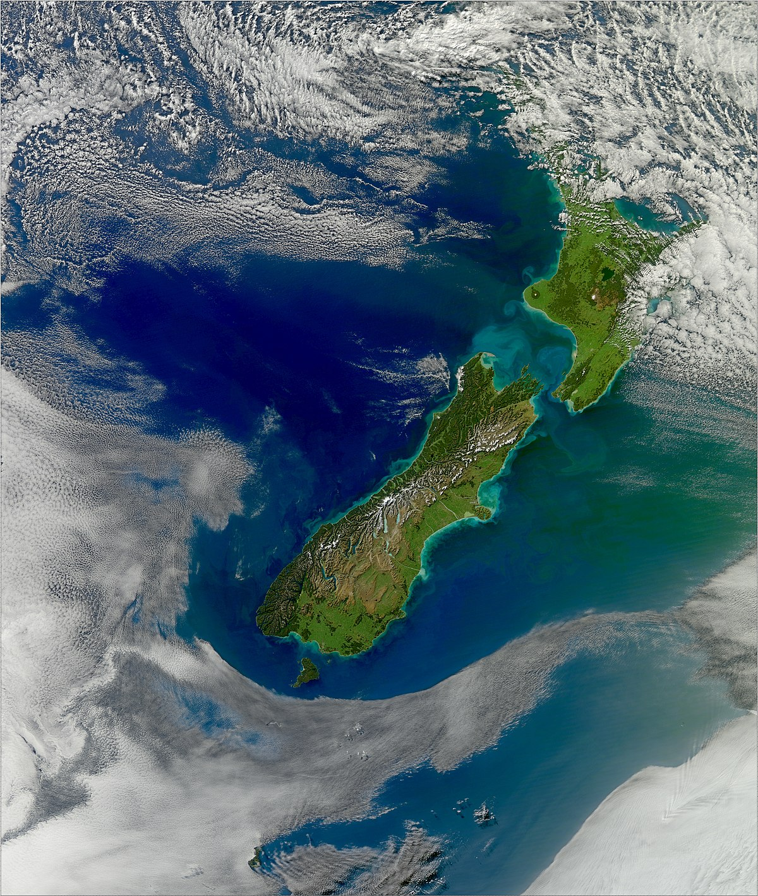

New Zealand
New Zealand is an island country in the southwestern Pacific Ocean. It consists of two main landmasses—the North Island (Te Ika-a-Māui) and the South Island (Te Waipounamu)—and over 700 smaller islands. It is the sixth-largest island country by area, covering 268,021 square kilometres (103,500 sq mi). New Zealand is about 2,000 kilometres (1,200 mi) east of Australia across the Tasman Sea and 1,000 kilometres (600 mi) south of the islands of New Caledonia, Fiji, and Tonga. The country's varied topography and sharp mountain peaks, including the Southern Alps, owe much to tectonic uplift and volcanic eruptions. New Zealand's capital city is Wellington, and its most populous city is Auckland. A developed country, New Zealand ranks highly in international comparisons of national performance, such as quality of life, education, protection of civil liberties, government transparency, and economic freedom. The country was the first to introduce a minimum wage, and the first to give women the right to vote. New Zealand underwent major economic changes during the 1980s, which transformed it from a protectionist to a liberalised free-trade economy. The service sector dominates the national economy, followed by the industrial sector, and agriculture; international tourism is also a significant source of revenue. Nationally, legislative authority is vested in an elected, unicameral Parliament, while executive political power is exercised by the Cabinet, led by the prime minister, currently Jacinda Ardern. Queen Elizabeth II is the country's monarch and is represented by the governor-general. In addition, New Zealand is organised into 11 regional councils and 67 territorial authorities for local government purposes. The Realm of New Zealand also includes Tokelau (a dependent territory); the Cook Islands and Niue (self-governing states in free association with New Zealand); and the Ross Dependency, which is New Zealand's territorial claim in Antarctica. New Zealand is a member of the United Nations, Commonwealth of Nations, ANZUS, OECD, ASEAN Plus Six, Asia-Pacific Economic Cooperation, the Pacific Community and the Pacific Islands Forum.

Geography and Environment
New Zealand is located near the centre of the water hemisphere and is made up of two main islands and more than 700 smaller islands. The two main islands (the North Island, or Te Ika-a-Māui, and the South Island, or Te Waipounamu) are separated by Cook Strait, 22 kilometres (14 mi) wide at its narrowest point. Besides the North and South Islands, the five largest inhabited islands are Stewart Island (across the Foveaux Strait), Chatham Island, Great Barrier Island (in the Hauraki Gulf), D'Urville Island (in the Marlborough Sounds) and Waiheke Island (about 22 km (14 mi) from central Auckland).



New Zealand is long and narrow—over 1,600 kilometres (990 mi) along its north-north-east axis with a maximum width of 400 kilometres (250 mi) —with about 15,000 km (9,300 mi) of coastline and a total land area of 268,000 square kilometres (103,500 sq mi). Because of its far-flung outlying islands and long coastline, the country has extensive marine resources. Its exclusive economic zone is one of the largest in the world, covering more than 15 times its land area. The South Island is the largest landmass of New Zealand. It is divided along its length by the Southern Alps. There are 18 peaks over 3,000 metres (9,800 ft), the highest of which is Aoraki / Mount Cook at 3,724 metres (12,218 ft). Fiordland's steep mountains and deep fiords record the extensive ice age glaciation of this southwestern corner of the South Island. The North Island is less mountainous but is marked by volcanism. The highly active Taupō Volcanic Zone has formed a large volcanic plateau, punctuated by the North Island's highest mountain, Mount Ruapehu (2,797 metres (9,177 ft)). The plateau also hosts the country's largest lake, Lake Taupō, nestled in the caldera of one of the world's most active supervolcanoes. The country owes its varied topography, and perhaps even its emergence above the waves, to the dynamic boundary it straddles between the Pacific and Indo-Australian Plates. New Zealand is part of Zealandia, a microcontinent nearly half the size of Australia that gradually submerged after breaking away from the Gondwanan supercontinent. About 25 million years ago, a shift in plate tectonic movements began to contort and crumple the region. This is now most evident in the Southern Alps, formed by compression of the crust beside the Alpine Fault. Elsewhere, the plate boundary involves the subduction of one plate under the other, producing the Puysegur Trench to the south, the Hikurangi Trench east of the North Island, and the Kermadec and Tonga Trenches further north.
National Anthem
"God Defend New Zealand" (Māori: "Aotearoa",[a] meaning 'New Zealand') is one of two national anthems of New Zealand, the other being "God Save the Queen". Legally the two have equal status, but "God Defend New Zealand" is more commonly used. Originally written as a poem, it was set to music as part of a competition in 1876. Over the years its popularity increased, and it was eventually named the second national anthem in 1977. It has English and Māori lyrics, with slightly different meanings. Since the late 1990s, the usual practice when performed in public is to perform the first verse of the national anthem twice, first in Māori and then in English.